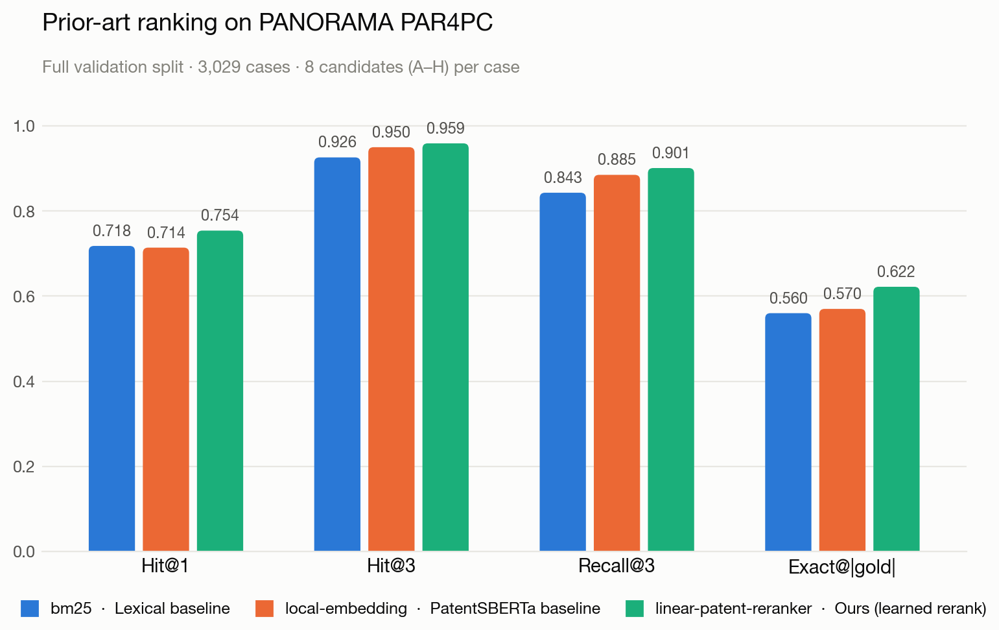
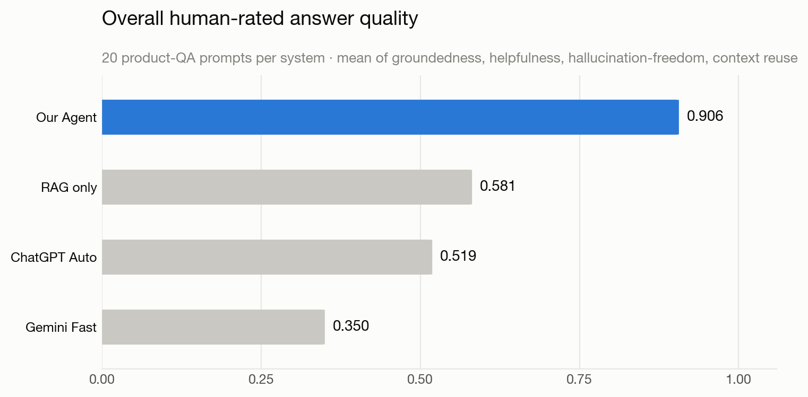

Patent Prior-Art Agent: From Retrieval to Evidence-Grounded Analysis
A tool-using LLM agent that turns a patent claim, an invention idea, or a vague search query into a ranked prior-art set, a limitation-level evidence chart, and a grounded answer in which every statement traces back to retrieved patent text. Retrieval, evidence alignment, synthesis, and verification are separate, inspectable steps.



How it works
- 01
Plan
Classifies the turn (new search, follow-up, comparison, filter) and decomposes the claim into limitations.
- 02
Recall
Coarse recall of candidates from a persistent FAISS index of 17,877 patents, using 768-dimensional PatentSBERTa vectors.
- 03
Rerank
A learned linear reranker over dense, BM25, and field-lexical scores, trained on PAR4PC.
- 04
Align
Picks the strongest title, abstract, or claim snippet for each limitation and builds the claim chart.
- 05
Synthesise
Writes the answer from the extracted evidence only.
- 06
Verify
Checks the answer against the evidence and labels it supported, partially supported, or unsupported, with a reason.
Results
- 0.754Hit@1 on PAR4PC, versus 0.718 for BM25 and 0.714 for PatentSBERTa
- +5.2 ptsExact@|gold| over the PatentSBERTa baseline (0.570 → 0.622)
- 0.906overall human-rated answer quality, versus 0.581 for plain RAG
- 0.98context reuse across follow-up turns